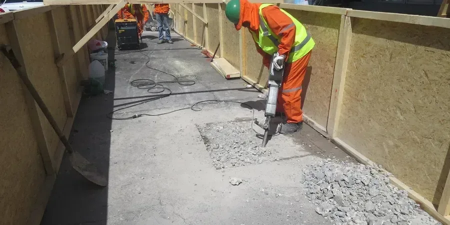

En Copiapó, ofrecemos servicios integrales de geotecnia adaptados a las condiciones únicas del desierto de Atacama. Desde la caracterización de suelos mediante calicatas y ensayos in situ hasta el diseño de cimentaciones y monitoreo de excavaciones, nuestro equipo combina experiencia regional con equipos calibrados para proporcionar informes confiables y conformes a la normativa chilena. Trabajamos en estrecha colaboración con autoridades locales y contratistas para asegurar el éxito de su proyecto.
